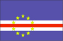

{kind=link}


![[Country map of Cape Verde]](../maps/cv-map.jpg)
| Cape Verde |  |
|
| | |
| Introduction |
Background: The uninhabited islands were discovered and colonized by the Portuguese in the 15th century; they subsequently became a trading center for African slaves. Most Cape Verdeans descend from both groups. Independence was achieved in 1975.
| Geography |
Location: Western Africa, group of islands in the North Atlantic Ocean, west of Senegal
Geographic coordinates: 16 00 N, 24 00 W
Map references: World
Area:
total:
4,033 sq km
land:
4,033 sq km
water:
0 sq km
Area - comparative: slightly larger than Rhode Island
Land boundaries: 0 km
Coastline: 965 km
Maritime claims:
measured from claimed archipelagic baselines
contiguous zone:
24 nm
exclusive economic zone:
200 nm
territorial sea:
12 nm
Climate: temperate; warm, dry summer; precipitation meager and very erratic
Terrain: steep, rugged, rocky, volcanic
Elevation extremes:
lowest point:
Atlantic Ocean 0 m
highest point:
Mt. Fogo 2,829 m (a volcano on Fogo Island)
Natural resources: salt, basalt rock, pozzuolana (a siliceous volcanic ash used to produce hydraulic cement), limestone, kaolin, fish
Land use:
arable land:
11%
permanent crops:
0%
permanent pastures:
6%
forests and woodland:
0%
other:
83% (1993 est.)
Irrigated land: 30 sq km (1993 est.)
Natural hazards: prolonged droughts; harmattan wind can obscure visibility; volcanically and seismically active
Environment - current issues: overgrazing of livestock and improper land use such as the cultivation of crops on steep slopes has led to soil erosion; demand for wood used as fuel has resulted in deforestation; desertification; environmental damage has threatened several species of birds and reptiles; overfishing
Environment - international agreements:
party to:
Biodiversity, Climate Change, Desertification, Environmental Modification, Hazardous Wastes, Law of the Sea, Marine Dumping, Nuclear Test Ban
signed, but not ratified:
none of the selected agreements
Geography - note: strategic location 500 km from west coast of Africa near major north-south sea routes; important communications station; important sea and air refueling site
| People |
Population: 401,343 (July 2000 est.)
Age structure:
0-14 years:
44% (male 88,202; female 86,630)
15-64 years:
50% (male 95,079; female 105,928)
65 years and over:
6% (male 10,043; female 15,461) (2000 est.)
Population growth rate: 0.98% (2000 est.)
Birth rate: 29.67 births/1,000 population (2000 est.)
Death rate: 7.38 deaths/1,000 population (2000 est.)
Net migration rate: -12.49 migrant(s)/1,000 population (2000 est.)
Sex ratio:
at birth:
1.03 male(s)/female
under 15 years:
1.02 male(s)/female
15-64 years:
0.9 male(s)/female
65 years and over:
0.65 male(s)/female
total population:
0.93 male(s)/female (2000 est.)
Infant mortality rate: 54.58 deaths/1,000 live births (2000 est.)
Life expectancy at birth:
total population:
68.91 years
male:
65.63 years
female:
72.29 years (2000 est.)
Total fertility rate: 4.19 children born/woman (2000 est.)
Nationality:
noun:
Cape Verdean(s)
adjective:
Cape Verdean
Ethnic groups: Creole (mulatto) 71%, African 28%, European 1%
Religions: Roman Catholic (infused with indigenous beliefs); Protestant (mostly Church of the Nazarene)
Languages: Portuguese, Crioulo (a blend of Portuguese and West African words)
Literacy:
definition:
age 15 and over can read and write
total population:
71.6%
male:
81.4%
female:
63.8% (1995 est.)
| Government |
Country name:
conventional long form:
Republic of Cape Verde
conventional short form:
Cape Verde
local long form:
Republica de Cabo Verde
local short form:
Cabo Verde
Data code: CV
Government type: republic
Capital: Praia
Administrative divisions:
14 districts (concelhos, singular - concelho); Boa Vista, Brava, Fogo, Maio, Paul, Praia, Porto Novo, Ribeira Grande, Sal, Santa Catarina, Santa Cruz, Sao Nicolau, Sao Vicente, Tarrafal
note:
there may be a new administrative structure of 16 districts (Boa Vista, Brava, Maio, Mosteiros, Paul, Praia, Porto Novo, Ribeira Grande, Sal, Santa Catarina, Santa Cruz, Sao Domingos, Sao Nicolau, Sao Filipe, Sao Vicente, Tarrafal)
Independence: 5 July 1975 (from Portugal)
National holiday: Independence Day, 5 July (1975)
Constitution: new constitution came into force 25 September 1992
Legal system: derived from the legal system of Portugal
Suffrage: 18 years of age; universal
Executive branch:
chief of state:
President Antonio MASCARENHAS Monteiro (since 22 March 1991)
head of government:
Prime Minister Carlos Alberto Wahnon de Carvalho VEIGA (since 13 January 1991)
cabinet:
Council of Ministers appointed by the president on the recommendation of the prime minister from among the members of the National Assembly
elections:
president elected by popular vote for a five-year term; election last held 18 February 1996 (next to be held NA February 2001); prime minister nominated by the National Assembly and appointed by the president
election results:
Antonio MASCARENHAS Monteiro reelected president; percent of vote - Antonio MASCARENHAS Monteiro (independent) 80.1%
Legislative branch:
unicameral National Assembly or Assembleia Nacional (72 seats; members are elected by popular vote to serve five-year terms)
elections:
last held 17 December 1995 (next to be held NA December 2000)
election results:
percent of vote by party - MPD 61.3%, PAICV 29.8%, PCD 6.7%, other 2.2%; seats by party - MPD 50, PAICV 21, PCD 1
Judicial branch: Supreme Tribunal of Justice or Supremo Tribunal de Justia
Political parties and leaders: African Party for Independence of Cape Verde or PAICV [Pedro Verona Rodrigues PIRES, chairman]; Movement for Democracy or MPD [Prime Minister Carlos VEIGA, founder and president]; Party for Democratic Convergence or PCD [Dr. Eurico MONTEIRO, president]; Party of Work and Solidarity or PTS [Dr. Oresimo SILVEIRA, president]
International organization participation: ACCT, ACP, AfDB, CCC, ECA, ECOWAS, FAO, G-77, IBRD, ICAO, ICFTU, ICRM, IDA, IFAD, IFC, IFRCS, ILO, IMF, IMO, Intelsat, Interpol, IOC, IOM (observer), ITU, NAM, OAU, OPCW, UN, UNCTAD, UNESCO, UNIDO, UPU, WCL, WHO, WIPO, WMO, WTrO (applicant)
Diplomatic representation in the US:
chief of mission:
Ambassador Ferdinand Amilcar Spencer LOPES
chancery:
3415 Massachusetts Avenue NW, Washington, DC 20007
telephone:
[1] (202) 965-6820
FAX:
[1] (202) 965-1207
consulate(s) general:
Boston
Diplomatic representation from the US:
chief of mission:
Ambassador Lawrence Neal BENEDICT
embassy:
Rua Abilio Macedo 81, Praia
mailing address:
C. P. 201, Praia
telephone:
[238] 61 56 16
FAX:
[238] 61 13 55
Flag description: three horizontal bands of light blue (top, double width), white (with a horizontal red stripe in the middle third), and light blue; a circle of 10 yellow five-pointed stars is centered on the hoist end of the red stripe and extends into the upper and lower blue bands
| Economy |
Economy - overview: Cape Verde's low per capita GDP reflects a poor natural resource base, including serious water shortages exacerbated by cycles of long-term drought. The economy is service-oriented, with commerce, transport, and public services accounting for almost 70% of GDP. Although nearly 70% of the population lives in rural areas, the share of agriculture in GDP in 1998 was only 13%, of which fishing accounts for 1.5%. About 90% of food must be imported. The fishing potential, mostly lobster and tuna, is not fully exploited. Cape Verde annually runs a high trade deficit, financed by foreign aid and remittances from emigrants; remittances constitute a supplement to GDP of more than 20%. Economic reforms, launched by the new democratic government in 1991, are aimed at developing the private sector and attracting foreign investment to diversify the economy. Prospects for 2000 depend heavily on the maintenance of aid flows, remittances, and the momentum of the government's development program.
GDP: purchasing power parity - $618 million (1999 est.)
GDP - real growth rate: 5% (1999 est.)
GDP - per capita: purchasing power parity - $1,500 (1999 est.)
GDP - composition by sector:
agriculture:
13%
industry:
19%
services:
68% (1998)
Population below poverty line: NA%
Household income or consumption by percentage share:
lowest 10%:
NA%
highest 10%:
NA%
Inflation rate (consumer prices): 5% (1999)
Labor force: NA
Unemployment rate: NA%
Budget:
revenues:
$188 million
expenditures:
$228 million, including capital expenditures of $116 million (1996)
Industries: food and beverages, fish processing, shoes and garments, salt mining, ship repair
Industrial production growth rate: NA%
Electricity - production: 40 million kWh (1998)
Electricity - production by source:
fossil fuel:
100%
hydro:
0%
nuclear:
0%
other:
0% (1998)
Electricity - consumption: 37 million kWh (1998)
Electricity - exports: 0 kWh (1998)
Electricity - imports: 0 kWh (1998)
Agriculture - products: bananas, corn, beans, sweet potatoes, sugarcane, coffee, peanuts; fish
Exports: $38 million (f.o.b., 1999 est.)
Exports - commodities: fuel, shoes, garments, fish, bananas, hides
Exports - partners: Portugal, Germany, Spain, France, UK, Malaysia
Imports: $225 million (f.o.b., 1999 est.)
Imports - commodities: foodstuffs, industrial products, transport equipment, fuels
Imports - partners: Portugal, Netherlands, France, UK, Spain, US
Debt - external: $220 million (1998)
Economic aid - recipient: $111.3 million (1995)
Currency: 1 Cape Verdean escudo (CVEsc) = 100 centavos
Exchange rates: Cape Verdean escudos (CVEsc) per US$1 - 107.280 (December 1999), 102.700 (1999), 98.158 (1998), 93.177 (1997), 82.591 (1996), 76.853 (1995)
Fiscal year: calendar year
| Communications |
Telephones - main lines in use: 22,000 (1995)
Telephones - mobile cellular: 0 (1995)
Telephone system:
domestic:
interisland microwave radio relay system with both analog and digital exchanges; work is in progress on a submarine fiber-optic cable system which was scheduled for completion in 1998
international:
2 coaxial submarine cables; HF radiotelephone to Senegal and Guinea-Bissau; satellite earth station - 1 Intelsat (Atlantic Ocean)
Radio broadcast stations: AM 1, FM 6, shortwave 0 (1998)
Radios: 73,000 (1997)
Television broadcast stations: 1 (1997)
Televisions: 2,000 (1997)
Internet Service Providers (ISPs): NA
| Transportation |
Railways: 0 km
Highways:
total:
1,100 km
paved:
858 km
unpaved:
242 km (1996 est.)
Ports and harbors: Mindelo, Praia, Tarrafal
Merchant marine:
total:
5 ships (1,000 GRT or over) totaling 9,523 GRT/11,795 DWT
ships by type:
cargo 4, chemical tanker 1 (1999 est.)
Airports: 6 (1999 est.)
Airports - with paved runways:
total:
6
over 3,047 m:
1
914 to 1,523 m:
5 (1999 est.)
| Military |
Military branches: single branch that includes both ground and naval elements
Military manpower - availability:
males age 15-49:
86,675 (2000 est.)
Military manpower - fit for military service:
males age 15-49:
49,069 (2000 est.)
Military expenditures - dollar figure: $4 million (FY96)
Military expenditures - percent of GDP: 1.8% (FY96)
| Transnational Issues |
Disputes - international: none
Illicit drugs: used as a transshipment point for illicit drugs moving from Latin America and Africa destined for Western Europe